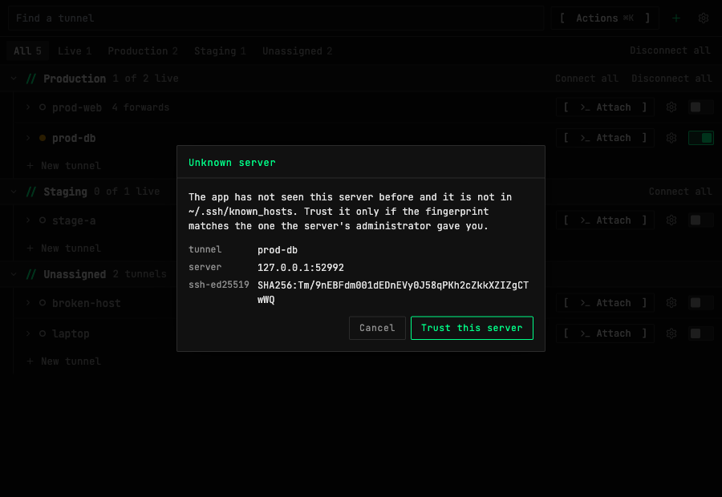

Poprawki bezpieczeństwa: klucze hosta, zapisane hasła i dowiązania
Trzy poprawki po przeglądzie bezpieczeństwa kodu. Każde połączenie SSH sprawdza teraz serwer, zapisane hasło nie trafia już na bastion, a usunięcie dowiązania nie rusza tego, na co ono wskazuje.
Każde połączenie sprawdza serwer
Dotąd klucz hosta serwera sprawdzały tylko tunele z zapisanym hasłem, a plik ~/.ssh/known_hosts nie był czytany. Teraz sprawdzane jest każde połączenie: tunele, terminal, Pliki, bastiony i ProxyCommand. Serwer z known_hosts albo z zaakceptowanym kluczem łączy się jak dotąd. Nieznany serwer otwiera główne okno z odciskiem klucza i łączy się dopiero po potwierdzeniu. Zmieniony klucz zatrzymuje połączenie i nie jest ponawiany.


Zapisane hasło nie trafia na bastion
Zapisane hasło tunelu było oferowane także bastionowi ProxyJump. Teraz bastion dostaje tylko klucze i agenta, a hasło idzie wyłącznie do serwera za nim.
Usunięcie dowiązania kasuje tylko dowiązanie
W oknie Pliki usunięcie dowiązania symbolicznego do katalogu kasowało zawartość tego katalogu. Teraz znika tylko dowiązanie, o czym mówi też potwierdzenie. Można też usuwać dowiązania, których cel już nie istnieje.
Jak z tego korzystać
- Gdy pojawi się okno Unknown server, porównaj odcisk klucza z tym od administratora serwera, potem wybierz Trust this server albo Cancel.
- Zaakceptowane klucze zobaczysz i usuniesz w ustawieniach tunelu, w sekcji danych logowania, przyciskiem Forget host keys.
- Jeśli klucz zmienił się z dobrego powodu, usuń tam stary klucz albo popraw
known_hosts, jeśli to tam jest zapisany.
Znane ograniczenia
- Serwer spoza
known_hostspyta raz dla każdego tunelu i adresu, także przy auto-connect. Bez odpowiedzi przez 90 sekund tunel kończy się błędem i trzeba połączyć go ręcznie. - Bastion przyjmujący wyłącznie hasła nie działa już z zapisanym loginem. Potrzebuje klucza albo agenta.
- Zapisane hasło nadal trafia do serwera za forwardem SSH, gdy otworzysz na nim Terminal, Pliki lub Edytor.
- Zrzut pochodzi z testowej wersji w przeglądarce. Okno było sprawdzone tam, a nie ręcznie w aplikacji desktopowej.
- Ograniczenia poprzedniej bety nadal obowiązują.